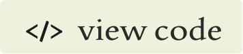
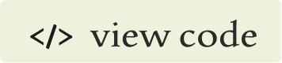

This is a post for the Neurips 2021 ML4PhysicalSciences workshop paper
Variational framework for partially-measured physical system control.
From this post, you will learn:
- Using the variational generative models, we provide a training algorithm for learning the distribution of the system’s inputs that are needed to obtain a desired output of the system.
- UsingthesamplingfeatureofthelearnedforwardVAEmodel,weillustratehowourtraining algorithm learns to iteratively move towards the correct distribution of the inputs.
 
July 2019

July 2019
A bit of a context
TBD.